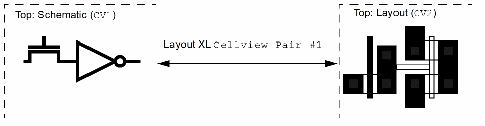
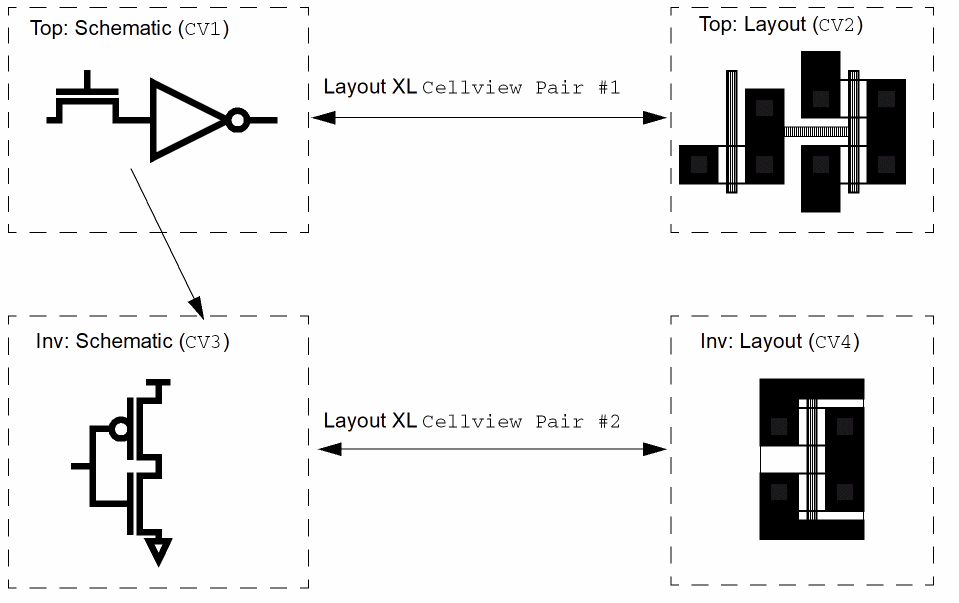
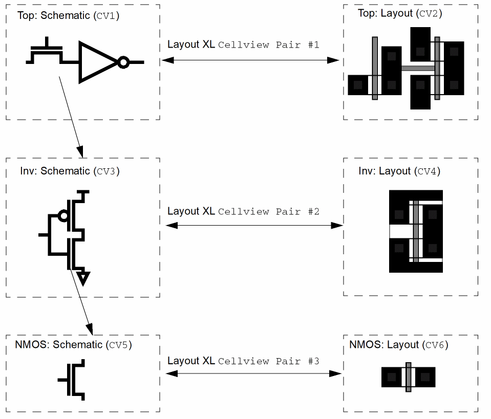

Probing a Hierarchical Design
To probe a hierarchical design,
-
Open a hierarchical design in Layout XL.
In the example below, this isCellview Pair #1.
 - From the layout window menu bar, choose Connectivity – XL Probe.
-
Choose the instance to probe; for example,
CV1, which is represented in the layout as pair of transistors (a flat representation). -
Choose Edit – Hierarchy – Edit in Place.
The schematic view of the inverter opens (CV3in the diagram below).
If you probe one of the transistors in this schematic, the corresponding transistor in the layout in the level above is highlighted (CV2in the diagram). -
In the inverter schematic (
CV3), select one of the two NMOS instances. -
In the schematic window, choose Launch – Layout XL to open the layout view for the inverter in Layout XL. This is
CV4in the diagram above.
This creates another cellview pair,Cellview Pair #2. -
To descend into the schematic of the inverter, select one of the NMOS instances and from the schematic window choose Edit – Hierarchy – Edit in Place.
The schematic of the NMOS opens,CV5in the diagram.
If you probe the transistor in this schematic, the corresponding transistor in the layout in the level above is highlighted (CV4in the diagram). -
In the schematic window, choose Launch – Layout XL to open the layout of the transistor (
CV6in the diagram) in Layout XL.
This creates another cellview pair,Cellview Pair #3. You can probe fromNMOS: Schematicback toTop: Layout,Inv: Layout, andNMOS: Layout.
Related Topics
Return to top